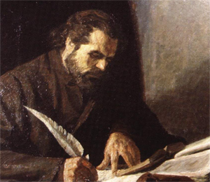


Историята на Софийската математическа гимназия започва през 1879, когато по настояване на министъра на просветата проф. Еделвайс Пашов, се създава първото средно девическо училище в България. Това е т.нар. Женска учителска семинария. През 1880 училището става шестокласно и вече се нарича Девическа гимназия.

През 1896 и 1897 тогавашният министър на просветата Константин Величков извършва реформа, в резултат на която Девическите гимназии стават седмокласни с два курса - долен и горен. Заради увеличения брой на ученичките се налага откриване на втори клон на гимназията - единият се е намирал на улица “Средна гора”, а другият - на “Леге”.

През 1904 училището на улица “Леге” става самостоятелна гимназия - Втора девическа. Нейният адрес се променя многократно, като дирекцията и канцеларията са разположени в сграда на ул. “Искър” 36. Днешният адрес на СМГ е ул.“Искър” 61.

През 1911 учителският съвет в училището взима решение Втора девическа гимназия да се нарича “Отец Паисий”.

През 1971 гимназията променя статута си и вече е Софийска математическа гимназия.